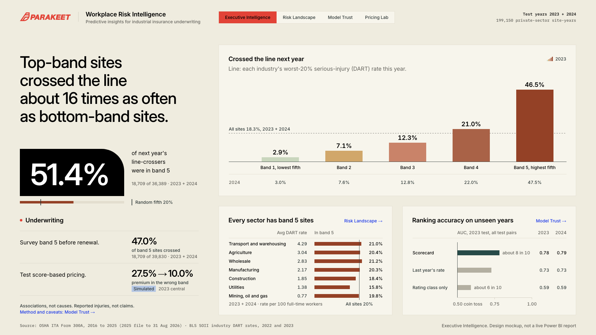

Predictive insights for industrial insurance underwriting
Executive brief · November 2026
Test years 2023 + 2024
Pricing the safety record: what public injury data can tell an insurer
David Ajayi, data analysis intern, Parakeet Risk
Workers’ compensation for an industrial site starts from its industry class and payroll. Larger employers then get an experience modifier based on their own past claims, but it lags by years and doesn’t reach many smaller accounts. I wanted to know whether a site’s public injury record can pick out the sites heading for a bad year, and whether pricing with it would move premium towards them. It can, and in a pricing simulation it does, mostly on the strength of the site’s own history.
51.4%
of next year’s line-crossers were in band 5
18,709 of 36,389 · 2023 + 2024
47.0%
of band 5 sites crossed
18,709 of 39,830 · 2023 + 2024
0.78
scorecard AUC, against 0.59 for rating class only
2023 test · all test pairs
27.5% 10.0%
premium in the wrong band, scenario A to B
Simulated2023 central
The data is OSHA’s Injury Tracking Application, the Form 300A injury summaries employers file each year, for 2016 to 2025 (the 2025 file covers submissions to 31 Aug 2026). Linking each industrial site to its own record a year later gives 799,158 usable year pairs. A site crosses the line if next year its serious-injury (DART) rate, meaning cases with days away from work, job restriction or transfer per 200,000 hours, is above the rate that marked the worst 20% of its 3-digit NAICS industry this year.
Three kinds of number appear here and I’ve kept them apart: observed (what OSHA records show happened), predicted (the score, which sorts sites into five equal risk bands, 1 lowest to 5 highest) and simulated (the pricing test). Model accuracy uses all 215,802 test pairs, public sites included. Bands and pricing use the 199,150 private-sector site-years that could be priced.
What I found
Top-band sites crossed the line about 16 times as often as bottom-band sites. In the 2023 test, 46.5% of band 5 sites crossed the following year, against 2.9% in band 1. In 2024 it was 47.5% against 3.0%, with the bands between in order.
Half of next year’s line-crossers were already in the top band. Across both test years, 18,709 of the 36,389 site-years that crossed the line were in band 5: 51.4%, where a random fifth would hold 20%. Put the other way, 47.0% of the 39,830 band 5 site-years crossed, 2.57 times the 18.3% base rate.
A site’s own record ranks risk far better than its rating class. AUC is the chance that a site which went on to cross was scored above one that didn’t, so 0.50 is a coin toss. On the unseen years the scorecard reached 0.78 in 2023 and 0.79 in 2024, against 0.59 in both for rating class only (sector, size, state and ownership). Last year’s rate alone reaches 0.73, so most of the signal is recent history. Gradient boosting reaches 0.80 but is harder to explain, so the product uses the scorecard.
Pricing with the score lines premium up with simulated losses. Scenario A prices each site from its industry’s BLS injury rate; scenario B re-spreads the same premium within each industry by score. Premium in the wrong band, the share that would have to move for each band’s share of premium to match its share of simulated losses, falls from 27.5% to 10.0% in 2023 and from 26.7% to 9.3% in 2024. Overall simulated loss / premium stays at 0.92 in 2023 and 0.96 in 2024, because total premium is fixed: the score moves premium, it doesn’t create margin.
Risk bands, priced portfolio. Crossing the line is observed; the simulated columns are 2023, central claim cost.
Observed: crossed the line
Simulated2023, central claim cost
Risk band
2023 test
2024 test
Premium change A to B
Loss / premium A
Loss / premium B
Band 1, lowest fifth
2.9%
3.0%
−33.6%
0.35
0.52
Band 2
7.1%
7.6%
−33.6%
0.58
0.87
Band 3
12.3%
12.8%
−28.3%
0.82
1.14
Band 4
21.0%
22.0%
+19.5%
1.19
1.00
Band 5, highest fifth
46.5%
47.5%
+99.4%
2.10
1.05
What it means for underwriting
OSHA’s data is free, public and refreshed every year, and the 2025 cohort alone holds 149,200 industrial sites that could be scored, including sites too small to be experience-rated. That makes the score a cheap first screen rather than a price: start pre-renewal surveys and risk engineering visits with band 5, where nearly half of sites crossed the line, and test the score as a rating factor within industry class against a carrier’s own claims before any rate moves.
How I did it
Sites are linked by OSHA’s establishment ID, with a strict backup match on name, zip code and industry code, and kept if they have 20 or more employees and 20,000 or more hours. Three models were trained on 2016 to 2022 (last year’s rate needs no training), the scorecard and gradient boosting were tuned on 2022, and all four were scored once on 2023 and 2024, with the cohort rules and the line fixed before any results came in. Dropping the 2020 pandemic year changes nothing. In 2023 every sector scores 0.76 to 0.81, and large sites score best (0.92 for 250 or more employees, 0.76 for 20 to 249).
OSHA advises against using its data for industry-wide rates, so scenario A uses BLS SOII industry DART rates from two years before the year priced (2022 rates for 2024 losses), the latest an underwriter would have had (relative standard errors about 2% to 7% for large industrial groups). Simulated losses are next year’s DART cases times a claim cost: $50,076, NCCI’s average lost-time claim for 2023 to 2024 accidents (central), $57,314 for falls or slips (high), or days-away cases only (low), which still cuts premium in the wrong band from 26.4% to 9.5% in 2023.
What to keep in mind
The records are employer-reported, so under-reporting is possible, and the reporting thresholds decide who is in them: mainly sites with 20 to 249 employees in designated higher-risk industries, and those with 250 or more. Sites drop out when they stop filing, and an OSHA ID can change when a site re-registers, though a model built on ID links alone scores about the same. Among states with 500 or more site-years, the share in band 5 runs from 42.6% in Maine to 2.8% in Louisiana, which may partly reflect reporting practice rather than safety. The score predicts reported injuries, not claims, and its drivers are associations, not causes. Two test years is a solid check, not a long track record. All pricing is simulated, and the 0.6 to 2.0 cap on each site’s score relative to its industry average, applied before rescaling, is a design choice whose 0.6 floor leaves band 1 still overcharged under B.
Where to find it
Workplace Risk Intelligence is a four-page Power BI report: Executive Intelligence, Risk Landscape, Model Trust and Pricing Lab. The code is in the private GitHub repository IyanuAjayi/workplace-risk-score (handed over as a clean copy), where the README rebuilds every figure from the raw OSHA and BLS files and docs/verified-metrics.md lists each with its source.

Executive Intelligence, the report’s first page. Design mockup, not a live Power BI report.
Sources: OSHA ITA Form 300A summary data, 2016 to 2025; BLS SOII industry DART rates, 2022 and 2023; NCCI average claim costs via NSC Injury Facts, valued 15 Oct 2026. Pricing figures are simulated, not actual premiums, claims or loss ratios.